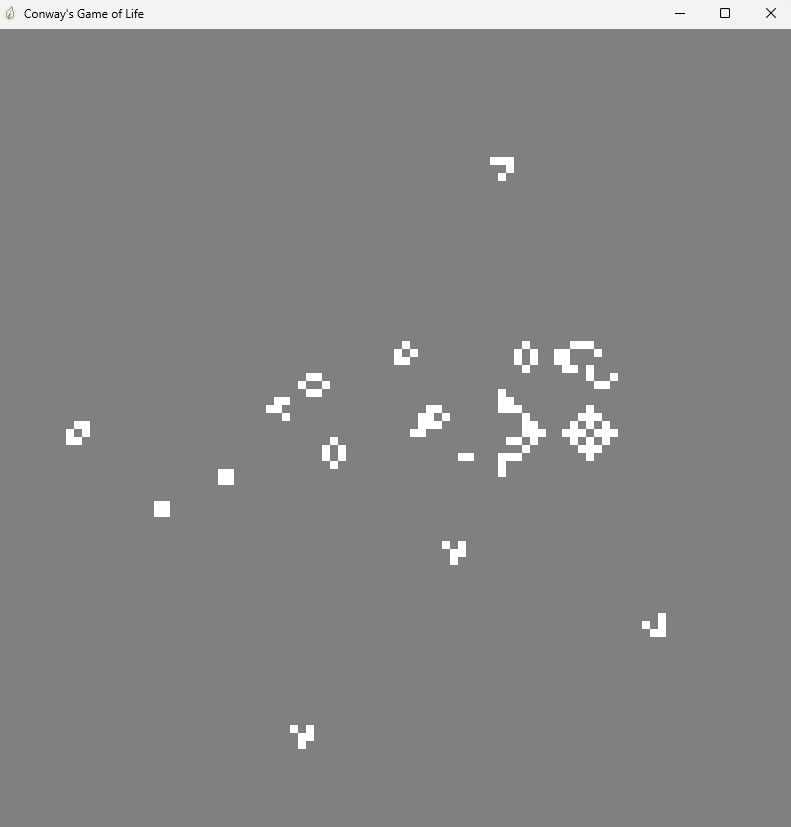

This project is neither complete nor stable. At the time of writing this, in September 2025, about 1.5 years ago, after my first contact with graphics programming, I started to learn about how a lot of the technologies in game engines works. I was always particularly interested in games. It's a form of art, just like music or movies, but a relatively new one. Therefore there are a lot of things that are not yet fully understood about video games, such as the things they are best at communicating about. There is a lot of potential for someone to create something that taps into someting new and helps to investigate that question. The technical part of making games interests me just as much. It's the combination of these two fields that appeals to me.
This project originally started as me on working on something big over a relatively long period of time for the first time. This quickly turned more and more into a playground for me to explore new ideas rather than anything to be seriously used in development. I only ever used it in a few small primitive examples to test features and mainly focussed on learning about new things and trying to implement and integrate them on my own. They don't really do justice to how feature-rich and sophisticated the engine is. You can take a look at these examples in the project source or clone the repository and run them.

I do not recommed using this engine for anything serious. There are a lot of features that are not yet implemented and probably never will be and also some architectual quirks that make it unergonomic to use in some respects. I have not worked on this project in a serious way for quite some time now. Compared to my relatively short net time of work experience, this project is already one of the older ones. Over the past 1.5 years while working on this project, I have significantly improved as a programmer and there is some baggage in terms of bad design choices that I've made in the past, that is not easy to get rid of. Additionally, Rust is a language that, even if it does some things right, is not really helping one solve the hard problems that arise when making games - quite the contrary actually. There are some good articles on this. I don't want to downplay the progress that I've made so far, though. After about 10000 lines of code the state of the project is already non-trivial. This project really opened my eyes to the fact that one can really create something meaningful if they just keep working on something rigorously.
I am rewriting this project for private use in a different (and better suited) language. I am not sure if that will ever be published and if it will be, that will be in the far future. I figured, that this version is still worth making public, as I invested a lot of time into it and it might be interesting.
What I wanted to achieve with this project was a way for me to be able to quickly test new things I want to learn. I wanted to automate a lot of the trickery you have to do e.g. just to get a functional windowed app up and running. Fun (or sad) fact: simply rendering something reliably at a stable frame rate is actually an unsolved problem with computers. There are whole talks that discuss this at length -- it's kinda bananas. The way you use the engine is by writing your own app that runs in the environment of the engine. That way a lot of different systems can operate on your stuff in a runtime-environment. You provide the functionality that gets called automatically (This is actually one of the desing quirks that I am not a really big fan of any more, especially if the engine is supposed to exist as a standalone module. I tried working against this in a few ways, but it's not worth it. A good rule of thumb probably is: Don't treat the users of your module like they are stupid, a lot of the time they will need access to some internal stuff. Private data is mostly an anti-pattern.). If you combine that with a generalized entity data storage, the engine can do a lot of work out of the box. These are systems that are currently included in the engine:
If you are looking for more in-depth explanations about this project, take a look at the README file in the project repository. This article won't cover more of that for now.